Assignment 3
零售银行客户细分与盈利分析
本报告完成作业 Part 1–4 的分析与结果解释。数据为 Group_presentation.csv，共 10,000 条记录。分析使用 R；原始数据保持不变。本阶段没有制作 PPT。
1. 主要发现
- 收入为 0 的客户有 1,689 人（16.89%），其中 1,576 人仍有交易。它可能混合真实零收入与未记录情况，不能仅从这份数据识别每个人的原因。
- 主方案选择 6 个客户群，全样本平均 silhouette 为 0.316。这是有重叠的粗分群；收入处理的敏感性意味着分群不宜直接用于自动化个人决策。
- C5 的平均记录 CLV 为 $4,741，C1 为 $934。当前 Yield 的差异小得多，不能把客户价值与当前利润混为一谈。
- 排除 Income 和 Yield 的 CLV 回归测试 R² 为 0.528，MAE 为 $486。交易数、产品数、年龄的条件关联为正；这解释的是现有 CLV 标签。
- 补充 Yield 模型测试 R² 为 0.060。它对当前个体利润的预测能力有限，不足以直接支持加费或差别待遇。
- 年轻客户的 CLV 较低，但数据没有真实未来价值或旧公式，不能证明 30 岁以下客户被低估，更不能据此统一上调其 CLV。
2. 数据准备与处理决策
每行是一条客户记录，但没有客户 ID。全部 7 列均以整数存储，统计测量类型却不同；Cat_Age 是有序类别，不能因为编码是数字就当作连续变量。
| variable | type | meaning |
|---|---|---|
| Tot_Prod | Discrete count | Total products owned, permitted 0-5 |
| Income | Numeric; ambiguous zero | Recorded income; period/unit not specified |
| No_Trans | Discrete count | Transaction count; period not specified |
| Cat_Age | Ordinal category | Observed categories 2-6; category 1 absent |
| Age | Numeric years | Age in years, 18-99 |
| Yield | Numeric profit; negatives valid | Current profit in dollars, may be negative |
| CLV | Derived numeric estimate | Expected lifetime value in dollars; unknown existing formula |
| variable | n | mean | sd | median | min | max | skewness |
|---|---|---|---|---|---|---|---|
| Tot_Prod | 10,000 | 1.36 | 0.62 | 1 | 1 | 5 | 1.65 |
| Income | 10,000 | 1,265.41 | 1,321.32 | 1,101 | 0 | 33,580 | 5.33 |
| No_Trans | 10,000 | 260.46 | 160.43 | 239 | 0 | 1,631 | 0.80 |
| Age | 10,000 | 47.22 | 17.63 | 45 | 18 | 99 | 0.45 |
| Yield | 10,000 | 158.57 | 696.50 | 28 | -421 | 50,947 | 43.93 |
| CLV | 10,000 | 1,932.26 | 1,385.74 | 1,704 | 9 | 55,306 | 7.82 |
数据没有显式缺失值、无限值或超出要求范围的年龄。存在两条与前面记录完全相同的值组合，但没有 ID 证明它们是重复客户，因此保留。产品数观察到 1–5，年龄组观察到 2–6；不能为没有出现的类别补造记录。
Yield 可为负，实际有 4,368 人（43.68%）当前亏损，属于作业允许的业务状态。Income 的时间周期和具体币种没有说明，因此不自行称其为“年收入”或“月收入”。
零收入与异常值
零收入组平均交易数为 107.0，正收入组为 291.6。这表明零记录包含活跃客户，却不能证明其必为缺失。主分析保留原值，明确标注为“记录收入”，并比较年龄组正收入中位数填补、对数变换与排除收入的替代方案。
| variable | lower | upper | below | above | cap99 | over_cap99 |
|---|---|---|---|---|---|---|
| Tot_Prod | -0.50 | 3.50 | 0 | 53 | 3.00 | 53 |
| Income | -1,315.62 | 3,549.38 | 0 | 327 | 5,375.11 | 100 |
| No_Trans | -167.50 | 668.50 | 0 | 150 | 702.04 | 100 |
| Age | -7.50 | 100.50 | 0 | 0 | 88.00 | 90 |
| Yield | -469.50 | 630.50 | 0 | 739 | 1,778.22 | 100 |
| CLV | -1,063.00 | 4,673.00 | 0 | 280 | 5,788.03 | 100 |
IQR 超界只用于筛查。高收入、高盈利和多产品客户可能真实存在，不能机械删除。主聚类只对 Income 和 No_Trans 的上端 1% 封顶后标准化，原始列和全部客户保留；群体画像仍使用原始量纲。Tot_Prod 4–5 属于合法产品数量，即使被 IQR 标记也保留。
主回归保留原始结果变量。另以训练集 99% 分位数封顶、排除训练集高 Cook 距离记录做敏感性分析，测试集始终保留原始结果。没有为了得到更漂亮的 R² 而删除难预测的测试客户。
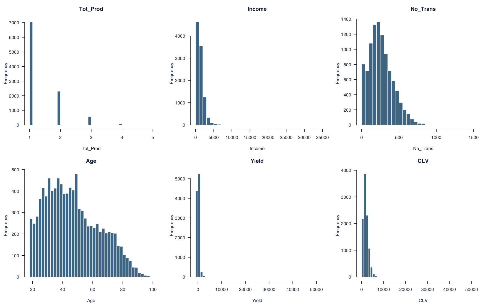
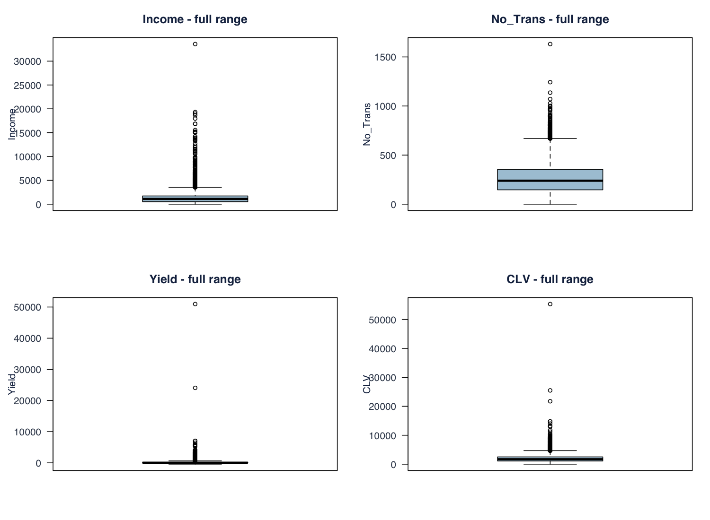
年龄变量核对
| Cat_Age | n | min | max |
|---|---|---|---|
| 2 | 2,998 | 18 | 35 |
| 3 | 3,202 | 36 | 50 |
| 4 | 1,850 | 51 | 64 |
| 5 | 1,469 | 65 | 79 |
| 6 | 481 | 80 | 99 |
实际编码与年龄范围完全一致；Cat_Age=2 包含 18–35 岁，因此不能直接用该组代表 30 岁以下。专题分析另用 Age<30。模型只使用 Age，Cat_Age 留作描述画像，避免重复计权或共线性。
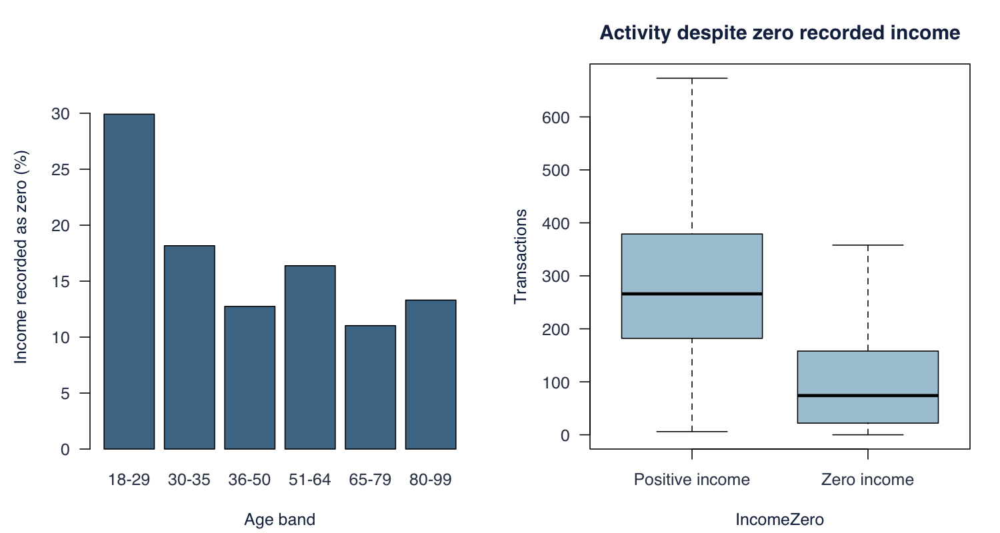
3. 单变量与双变量探索
先按 W3 做分布与频数，再根据 W4/W6 的变量类型选择检验。数值对数值用 Pearson；Spearman 用作对极端值敏感性的补充。两组均值使用 Welch t 检验，多组采用 Welch ANOVA，并同时保存课堂经典 ANOVA；方差检查用以中位数为中心的 Brown–Forsythe 检验。
| x | method | r | p_holm |
|---|---|---|---|
| Tot_Prod | pearson | 0.458 | <0.001 |
| Tot_Prod | spearman | 0.501 | <0.001 |
| Income | pearson | 0.777 | <0.001 |
| Income | spearman | 0.861 | <0.001 |
| No_Trans | pearson | 0.653 | <0.001 |
| No_Trans | spearman | 0.775 | <0.001 |
| Age | pearson | 0.054 | <0.001 |
| Age | spearman | 0.115 | <0.001 |
| Yield | pearson | 0.562 | <0.001 |
| Yield | spearman | 0.241 | <0.001 |
CLV 与 Income、No_Trans 和产品数存在关联。Yield 的 Pearson 与 Spearman 差异较大，说明极端值对线性相关系数影响明显。Age 与 CLV 的总体线性相关很弱，但年龄分组均值并非一条直线，因此不能据低相关就认定年龄不相关。
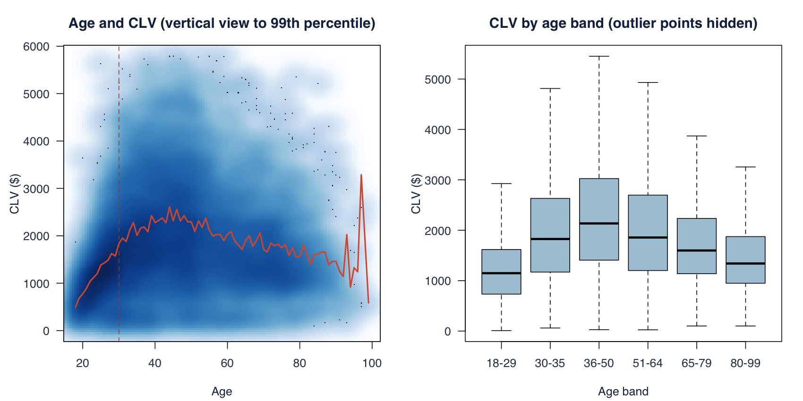
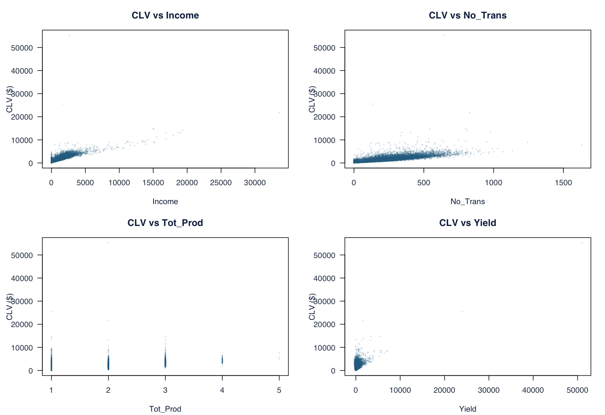
30 岁以下有 1,765 人，平均 CLV $1,246；其余客户平均 $2,079。均值差（年轻减其他）为 $-833，95% CI [-879, -786]，Welch p <0.001。年龄组也同时存在收入、产品数和交易差异，这不是低估的直接证据。
| outcome | Welch_F | Welch_p | Brown_Forsythe_p | eta_squared |
|---|---|---|---|---|
| CLV | 269.152 | <0.001 | <0.001 | 0.075 |
| Yield | 127.860 | <0.001 | <0.001 | 0.023 |
| Income | 208.774 | <0.001 | <0.001 | 0.060 |
| No_Trans | 229.677 | <0.001 | <0.001 | 0.090 |
多组 CLV 比较采用逐对 Welch t 检验并用 Holm 校正；这些是对记录值的差异检验。年龄组与零收入的卡方检验 Cramér’s V 为 0.172，p <0.001，最小期望频数 81.2。详细假设、效应量和 p 值见 两组检验、CLV 组间比较 与 卡方结果。大样本下统计显著不等于业务影响很大。
4. k-means 客户细分
聚类输入为 Tot_Prod（关系广度）、Income（记录收入）、No_Trans（活跃度）、Age（生命周期）。Yield 与 CLV 完全不参与形成群体，只用于事后画像。所有输入进行 z-score 标准化；Cat_Age 不重复进入。
比较 k=2–8，每个解使用 50 个随机起点。由于数据中存在大量重复或接近的点，采用 R 的 Lloyd 更新算法以避免默认算法的 Quick-Transfer 警告。固定种子使结果可复现，并以其他种子验证稳定性。
先用相同的 2,500 条记录估计 silhouette，再对最高的两个可行方案计算全体 10,000 条记录的精确 silhouette。将至少占 2% 的群体作为可操作性参考；这是分析者的选择，不是作业硬性要求。W7 提醒微小分差不值得过度解读：分数接近时，结合群体画像、规模和可执行性判断，简单方案是重要参考。
| k | sampled_silhouette | negative_silhouette_share | smallest_n | largest_n | within_ss | between_fraction | full_silhouette |
|---|---|---|---|---|---|---|---|
| 2 | 0.3231 | 0.0332 | 3,349 | 6,651 | 27,254.86 | 0.3186 | 0.3205 |
| 3 | 0.3067 | 0.0600 | 2,995 | 4,004 | 20,701.65 | 0.4824 | NA |
| 4 | 0.3122 | 0.0224 | 1,855 | 3,347 | 16,772.11 | 0.5807 | NA |
| 5 | 0.3099 | 0.0332 | 789 | 2,802 | 14,525.82 | 0.6368 | NA |
| 6 | 0.3149 | 0.0228 | 470 | 2,586 | 13,103.72 | 0.6724 | 0.3163 |
| 7 | 0.2790 | 0.0388 | 372 | 2,322 | 12,047.78 | 0.6988 | NA |
| 8 | 0.2934 | 0.0364 | 381 | 2,300 | 10,991.19 | 0.7252 | NA |
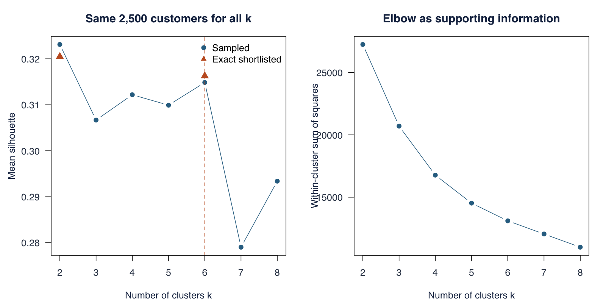
为什么选择六群而不是两群
| 群数 | Silhouette | 最小群人数 | 最大群人数 | 各群均龄极差 | 最低群中位 Yield | 最高群中位 Yield |
|---|---|---|---|---|---|---|
| 2 | 0.320 | 3,349 | 6,651 | 3.325 | 20 | 55 |
| 6 | 0.316 | 470 | 2,586 | 38.161 | -25 | 118 |
两群方案的精确 silhouette 为 0.3205，六群为 0.3163，差距约 0.0042。两群足以表达大致活跃程度，但其平均年龄仅约 45 和 48 岁，且合并了不同的产品和交易组合。六群保留了单产品高交易、年长单产品、较年轻低活跃等可解释群体，最小群有 470 人（4.7%），并非由少数极端客户组成。
在六群画像中，单产品高活跃群与较年轻低活跃群的 Yield 中位数均为 −25，而年长单产品群为 118。这是选择六群的重要业务理由：它揭示了两群方案掩盖的当前盈利差异。代价是管理与执行更复杂，且整体 silhouette 并未改善，因此两群仍保留为简化备选。这里使用被动盈利变量帮助解释方案，后续群间检验属于探索性描述，不能充当独立确认。
最终选择 k=6，精确 silhouette 0.316，负 silhouette 的客户比例 3.1%。分群存在明显重叠，宜理解为粗分层；并非“清晰自然存在的几种人”。所有 k 的画像均已保存以便比较，不能只凭最高分解释群体。
| Cluster | name | n | share | Tot_Prod_mean | Income_mean | No_Trans_mean | Age_mean | Yield_mean | Yield_median | CLV_mean | negative_yield_rate |
|---|---|---|---|---|---|---|---|---|---|---|---|
| 1 | 较年轻·单产品低活跃客户 | 2,586 | 0.26 | 1.00 | 436.48 | 142.48 | 32.58 | 48.96 | -25.0 | 933.87 | 0.60 |
| 2 | 多产品·中等活跃客户 | 1,299 | 0.13 | 2.10 | 951.93 | 218.03 | 39.85 | 197.91 | 80.0 | 1,968.43 | 0.35 |
| 3 | 单产品·高活跃客户 | 2,006 | 0.20 | 1.00 | 1,652.99 | 372.13 | 44.10 | 58.39 | -25.0 | 2,227.83 | 0.56 |
| 4 | 多产品·高活跃客户 | 1,262 | 0.13 | 2.41 | 2,094.26 | 440.56 | 45.89 | 222.18 | 95.5 | 3,368.42 | 0.35 |
| 5 | 高记录收入·高活跃客户 | 470 | 0.05 | 1.56 | 4,956.06 | 516.13 | 46.11 | 259.96 | 82.0 | 4,741.10 | 0.35 |
| 6 | 年长·单产品为主客户 | 2,377 | 0.24 | 1.06 | 841.64 | 171.58 | 70.74 | 287.05 | 118.0 | 1,431.35 | 0.27 |
表中的 share 和 negative_yield_rate 是 0–1 比例。完整表提供所有数值变量的均值、中位数和标准差；Cat_Age 按类别比例呈现，另保存产品数各档比例。年龄类别比例 覆盖原始变量中不能用连续均值解释的 Cat_Age。
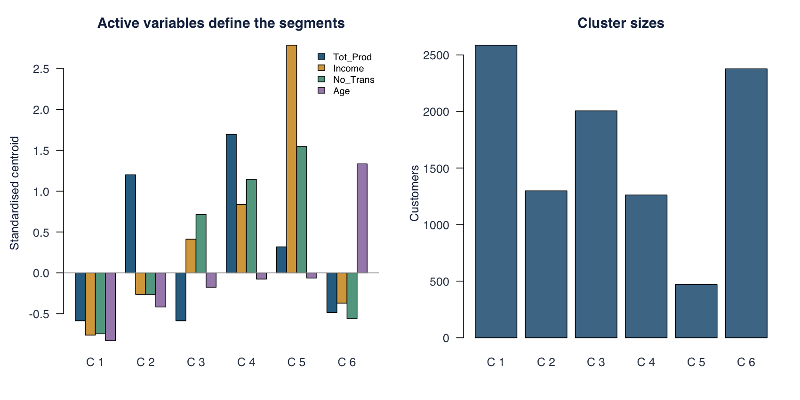
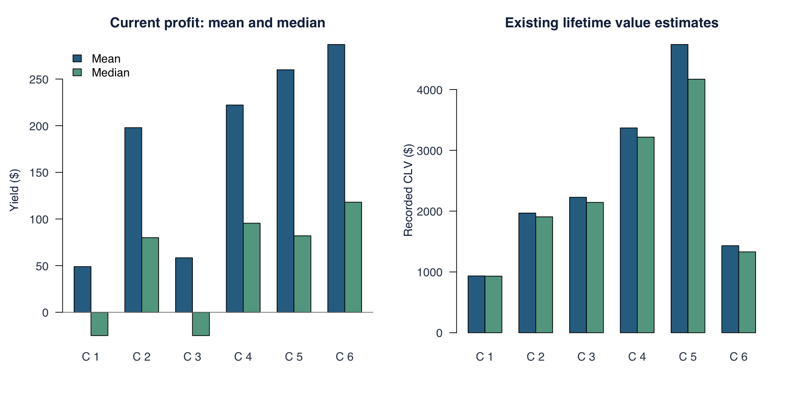
按人均 Yield 排序，C6 最高、C1 最低；按人均 CLV 排序，C5 最高、C1 最低。总利润还受群体规模影响：C6 贡献全部 Yield 的 43.0%。年长客户的当前盈利贡献尤其值得保留，不能因为其记录 CLV 低于高活跃群就降低服务重视程度。
群体 Yield 差异 Welch p <0.001，但 η² 只有 0.02111；CLV 的 η² 为 0.503。因此这套细分对记录 CLV 的区分强于对当前利润的区分。主动输入本来就被用于形成群体，其显著性不能当成独立验证；被动 CLV 也受旧公式影响。
稳定性与收入处理敏感性
| seed | adjusted_rand | within_ss |
|---|---|---|
| 11 | 0.9983 | 13,103.69 |
| 23 | 0.9996 | 13,103.72 |
| 47 | 0.9948 | 13,103.81 |
| 101 | 0.9964 | 13,103.71 |
| 2,026 | 0.9981 | 13,103.69 |
| scenario | adjusted_rand_vs_primary | sampled_silhouette_own_space | smallest_n |
|---|---|---|---|
| raw_no_caps | 0.8156 | 0.3312 | 54 |
| capped_log_income | 0.5261 | 0.3649 | 1,125 |
| zeros_as_missing_imputed | 0.8351 | 0.3182 | 431 |
| exclude_income | 0.7307 | 0.3849 | 600 |
ARI（调整兰德指数）越接近 1，表示两种分群越一致；接近 0 或负值表示一致性低。固定处理方式下不同种子的稳定，与改变处理方式后的稳定，是两件不同的事。对数收入方案与主方案明显不同，排除收入也会改变分组，说明收入如何编码是重要决策。不同处理空间的 silhouette 不宜直接作为谁“更真实”的证明。
主方案选择保留记录零值，是为了不假装知道缺失机制；上端封顶是为了减弱少量极端距离。该决定需要在业务上核实收入信息后重评，报告不将任何一个分群称为唯一正确答案。
5. 预测模型及核验
为什么以 CLV 线性回归为主
作业允许预测 Yield 或 CLV，但商业建议明确要求讨论 CLV 的关联因素。因此主模型解释记录 CLV，并以 Yield 回归补充当前盈利检查。选择线性回归以体现 W8 的系数解释、拟合与假设检查；数据中的主要关联可用较简单模型表达，没有为增加方法数量而加入 CART。
CLV 是前任分析师计算的标签。主模型排除 Income 与 Yield，降低直接复现其公式的风险。No_Trans、Tot_Prod 等也可能参与原公式，因此这并不能消除目标构造问题。所有“驱动因素”在本报告中都指对现有标签的统计关联，不能解释为未来真实利润的因果驱动。
按相同的 Tot_Prod、No_Trans、Age 组合分组切分，训练集 8003 行、测试集 1997 行，避免同样的主模型输入组合同时出现在两边。训练内做分组五折交叉验证；预处理敏感性所需的收入填补值与封顶值只由训练集估计。聚类使用全体客户，但聚类标签不进入预测模型，也不用于选择模型。
比较线性年龄、二次年龄与 30 岁连续折线三种候选。选择仅依据训练内 CV；在最优 RMSE 的 1% 以内优先简单模型。这里保留 linear。这是一套内部验证，不是新银行、新时期或真实未来现金流上的外部验证；探索阶段已查看全体数据分布。
| model | pooled_RMSE | weighted_MAE | fold_RMSE_sd | parameters |
|---|---|---|---|---|
| linear | 983.107 | 496.841 | 328.210 | 4 |
| quadratic_age | 980.944 | 493.882 | 328.474 | 5 |
| age_hinge30 | 980.223 | 494.063 | 328.872 | 5 |
| model | train_n | test_n | R2_train | adjusted_R2 | residual_SE | F | F_df1 | F_df2 | F_p |
|---|---|---|---|---|---|---|---|---|---|
| linear | 8,003 | 1,997 | 0.5067 | 0.5065 | 982.6038 | 2,738.768 | 3 | 7,999 | <0.001 |
| model | n | RMSE | MAE | R2 | mean_error |
|---|---|---|---|---|---|
| Training_mean_baseline | 1,997 | 1,332.334 | 924.164 | 0.000 | -15.582 |
| Primary_linear | 1,997 | 915.231 | 486.187 | 0.528 | -9.250 |
相对训练均值基线，测试 RMSE 降低 31.3%；MAE 降低 47.4%。RMSE 仍较大，反映高价值尾部难以预测。测试指标属于训练模型；另存全数据重拟合模型用于最终解释，不把重拟合后的训练拟合度冒充测试表现。
系数与关联因素
| term | estimate | classical_se | classical_p | HC3_se | HC3_t | HC3_p | HC3_low95 | HC3_high95 |
|---|---|---|---|---|---|---|---|---|
| (Intercept) | -272.7273 | 29.0643 | <0.001 | 35.7074 | -7.6378 | <0.001 | -342.7231 | -202.7315 |
| Tot_Prod | 652.2724 | 18.9152 | <0.001 | 20.0504 | 32.5317 | <0.001 | 612.9684 | 691.5763 |
| No_Trans | 4.9733 | 0.0725 | <0.001 | 0.1278 | 38.9009 | <0.001 | 4.7227 | 5.2239 |
| Age_c | 8.9427 | 0.6236 | <0.001 | 0.4484 | 19.9423 | <0.001 | 8.0636 | 9.8217 |
训练模型为：CLV = -272.73 + 652.27 × Tot_Prod + 4.973 × No_Trans + 8.943 × (Age − 45)。
控制模型中的其他变量后，每多一个产品与 CLV 高 $652 相关；每多 100 次交易与 CLV 高 $497 相关。这些是条件关联，不能用来承诺交叉销售或增加交易的实际增量利润。年龄系数是条件关系，不等同原始年龄组均值的走势。
| block | partial_R2_train | incremental_R2_train |
|---|---|---|
| transactions | 0.3705 | 0.2904 |
| products | 0.1294 | 0.0733 |
| age | 0.0251 | 0.0127 |
用分块 partial R² 比较贡献，避免直接比较不同单位的原始系数。这里交易数最强，其次是产品数，再次是年龄；这是给定变量集合中的结果，不代表未观察因素不重要。
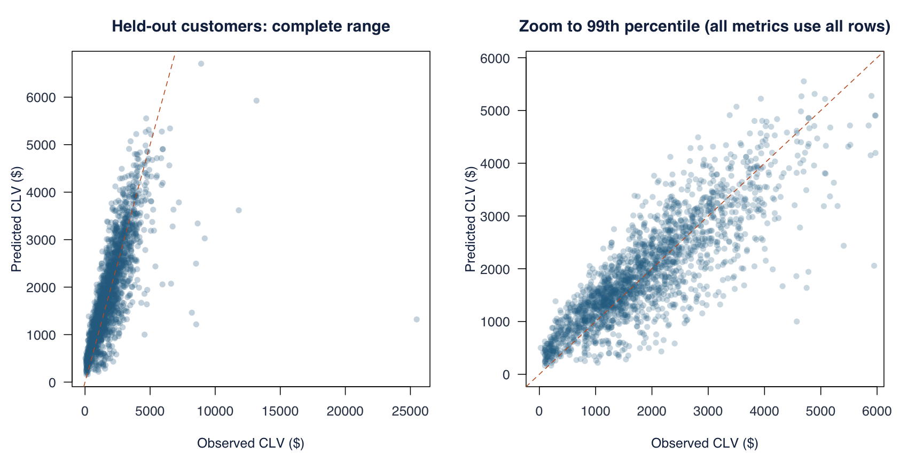
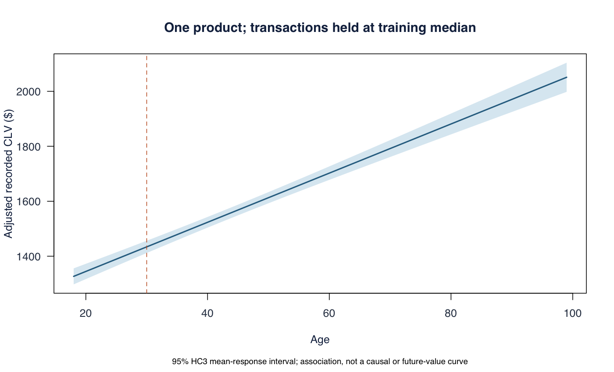
假设、异常点与敏感性
| diagnostic | value |
|---|---|
| BP_style_nR2_fitted_variance | 13.72886 |
| BP_style_p | 0.00021 |
| Residual_skewness | 20.03901 |
| Cook_above_4_over_n | 224.00000 |
| Leverage_above_2p_over_n | 678.00000 |
| Abs_standardized_residual_above3 | 76.00000 |
| Max_VIF | 1.11544 |
| term | VIF |
|---|---|
| Tot_Prod | 1.115 |
| No_Trans | 1.113 |
| Age_c | 1.008 |
VIF 较低，未显示严重共线性。残差右尾很长且存在异方差与影响点，不能宣称线性回归全部假设满足。采用 HC3 稳健标准误辅助系数推断，同时保留课堂常规标准误供比较。HC3 不会修复非线性、尾部预测误差、未知的独立性或因果识别问题。数据无客户 ID/时间信息，无法实证证明误差独立。
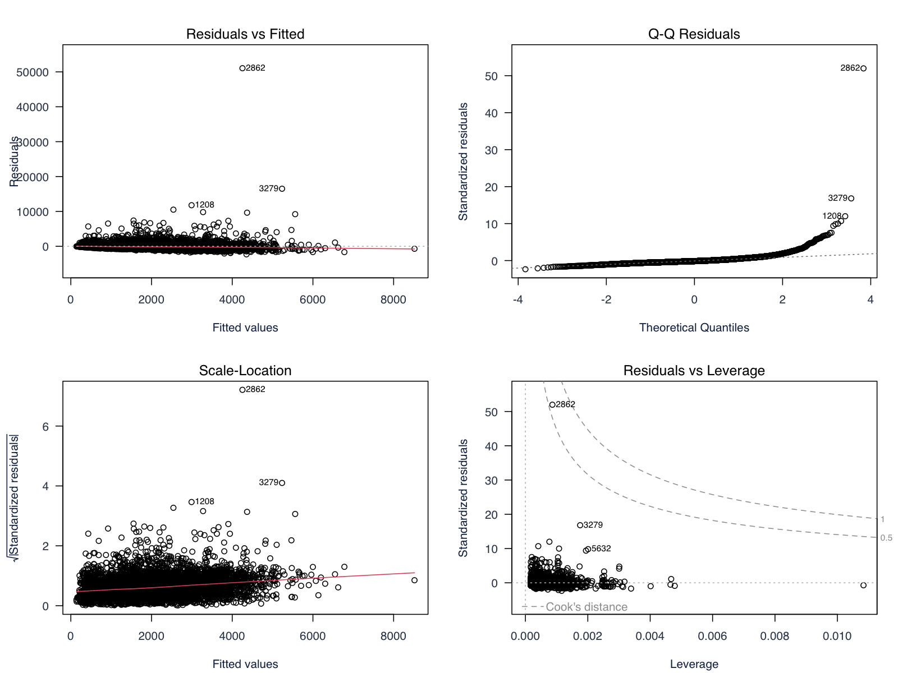
| model | n | RMSE | MAE | R2 | mean_error |
|---|---|---|---|---|---|
| Primary_all_training_rows | 1,997 | 915.231 | 486.187 | 0.528 | -9.250 |
| Sensitivity_training_p99_caps | 1,997 | 924.851 | 482.376 | 0.518 | -37.435 |
| Sensitivity_omit_training_Cook_flags | 1,997 | 918.619 | 475.266 | 0.525 | -80.704 |
上端封顶和移除训练影响点后，产品数、交易数和年龄系数方向仍可核对于 敏感性系数表。这些方案不取代主结果：移除合法高价值客户会改变研究总体，且在原始测试集上的 RMSE 没有改善。
CLV 衍生公式与年轻客户专题
| model | n | RMSE | MAE | R2 | mean_error |
|---|---|---|---|---|---|
| Primary_excludes_Income_Yield | 1,997 | 915.231 | 486.187 | 0.528 | -9.250 |
| Diagnostic_add_Income | 1,997 | 719.659 | 321.001 | 0.708 | -0.805 |
| Diagnostic_Income_plus_zero_flag | 1,997 | 719.903 | 321.027 | 0.708 | -1.539 |
| Diagnostic_train_age_median_imputation | 1,997 | 721.591 | 323.691 | 0.707 | 1.495 |
| Diagnostic_include_Income_and_Yield | 1,997 | 266.126 | 191.270 | 0.960 | 8.612 |
将 Income 和 Yield 加回诊断模型后，测试 R² 升到 0.960。这与“CLV 由其他变量计算”的描述相符，但不是找回旧公式的证明，更不是模型能预测真实未来价值的证据。该模型仅作目标来源诊断。
| specification | term | estimate | classical_se | classical_p | HC3_se | HC3_t | HC3_p | HC3_low95 | HC3_high95 |
|---|---|---|---|---|---|---|---|---|---|
| Primary predictors plus quadratic age | Under30 | -197.0883 | 49.7941 | <0.001 | 38.5095 | -5.1179 | <0.001 | -272.5769 | -121.5997 |
| Also adjust Income and Yield (derived-target diagnostic) | Under30 | -29.1200 | 13.6006 | 0.0323 | 13.0375 | -2.2336 | 0.0255 | -54.6768 | -3.5631 |
加入二次年龄项后，Under30 仍表现为负关联；再调整 Income 和 Yield，差异明显减弱。其大小依赖控制变量和模型形式。因此证据支持检查旧公式及年轻客户的输入质量，无法确定低估的幅度，也不支持直接给所有年轻客户统一加值。
补充 Yield 回归
| model | n | RMSE | MAE | R2 | mean_error |
|---|---|---|---|---|---|
| Yield_training_mean_baseline | 1,997 | 688.211 | 256.366 | 0.00 | -10.289 |
| Yield_linear | 1,997 | 667.015 | 227.449 | 0.06 | -9.217 |
补充模型排除 CLV，避免把可能包含 Yield 的衍生变量拿来预测 Yield。其测试 R² 为 0.060，说明可用变量解释当前利润的能力有限。在控制收入、年龄、产品数等因素后，交易数系数为 -0.562，95% HC3 CI [-0.799, -0.324]。这一负关联提示调查服务成本，但数据没有交易渠道、费用和成本信息，不能断言交易导致亏损。
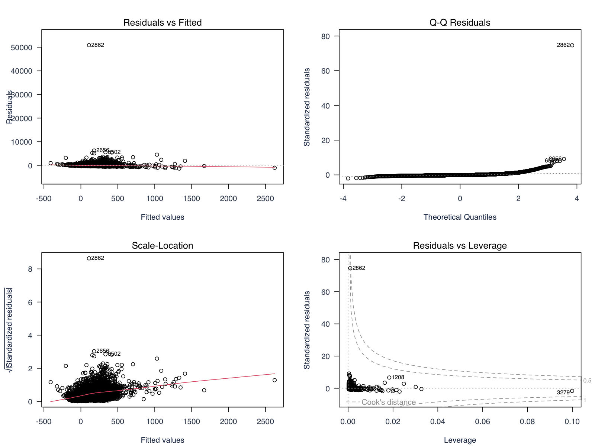
6. 商业建议与验证方式
以下建议把群体画像与预测模型证据连接起来。它们是应通过业务试点验证的行动方向；数据没有具体产品持有类型、客户需求、交易渠道或成本，不能推出应向某个客户销售哪一个产品。
1. 维护高活跃客户关系
目标：C5：高记录收入·高活跃客户。群体证据：占客户 4.7%，占记录 CLV 11.5%；平均 CLV $4,741。
模型证据：主 CLV 模型交易数、产品数系数为正；该群测试 MAE $1,279。
行动：采用服务回访、问题优先处理和自愿留存方案，先检查客户需求与服务成本。验证：试点与对照组留存率、净 Yield、服务成本及投诉率。
2. 对少产品客户做需求导向的交叉销售试点
目标：C3：单产品·高活跃客户。群体证据：平均产品数 1.00，平均 CLV $2,228。
模型证据：控制交易和年龄后，每多一产品与记录 CLV 高 $652 相关；95% HC3 CI [613, 692]。
行动：从适合的客户中随机开展小规模需求评估与产品试点，不能只凭分群推销具体产品。验证：试点与对照组适配产品采纳率、净 Yield、客户投诉；不能把模型系数当增量收益承诺。
3. 检查高交易客户的服务成本
目标：C3中的高频交易客户。群体证据：平均交易 372，亏损客户比例 56.2%。
模型证据：补充 Yield 模型中每 100 次交易与 Yield 变化 $-56 相关；但测试 R² 仅 0.060。
行动：调查交易渠道与单次服务成本，测试自愿数字渠道支持；暂不直接按模型提高费用。验证：单位交易成本、客户净 Yield、渠道使用及服务可达性。
4. 先核实零收入记录，再更新客户价值判断
目标：C1中的零收入记录客户。群体证据：该群零收入比例 39.7%；零收入不能等同没有经济能力。
模型证据：加入收入后测试 CLV R² 从 0.528 升至 0.708；收益可能来自旧 CLV 公式，不能视作真实终身价值验证。
行动：区分无收入、未申报、未更新等原因，记录来源与时间；不得用推测收入覆盖原始值。验证：经确认记录比例、收入状态变化、重新分群稳定性和价值估计变化。
7. 结论的适用范围
- 这是一份无采样说明、无客户 ID、无时间跨度的数据；不能证明代表银行全体客户，也无法验证真实生命周期结果。
- Income=0 的真实原因未知；极端值未获业务核实。所有处理均为可复查的分析选择。
- 分群存在重叠且对收入处理敏感，不能把某一客户的群标签看作永久属性。
- CLV 为衍生标签，良好拟合可能来自旧公式结构；模型没有识别营销行动的因果收益。
- 两个回归均存在长尾和异方差。测试集表现只描述本次内部切分，个体层面的预测尤其是极端高值不可靠。
- 主张“年轻客户被低估”需要旧公式、纵向实际利润或其他可信价值基准；目前证据不足。
8. 复现、文件说明与作业要求核对
在装有 R 的电脑上运行以下命令。只依赖随 R 通常安装的推荐包 cluster，当前机器已经具备；没有新增 R 包，也没有访问外部数据。脚本不安装软件、不覆盖原始 CSV。
Rscript --vanilla run_analysis.R Rscript --vanilla verify_results.R
主入口会重新生成 tables、plots、models、data 和本 HTML。models/regression.rds 同时保留训练模型和全数据重拟合模型；logs/sessionInfo.txt 记录环境。验证结果见 verification.txt。
- run_analysis.R：主入口。
- 01_data_eda.R：数据检查与探索。
- 02_clusters.R：聚类与稳定性。
- 03_models.R：预测与诊断。
- 04_report.R：用真实结果生成本报告。
- verify_results.R：独立核验。
| week | application |
|---|---|
| W3 | 变量测量水平、频数、均值/中位数/标准差、偏态、z-score。 |
| W4 | Welch 两样本 t 检验；年龄组与零收入的卡方检验；关联与因果的区分。 |
| W6 | Pearson 相关、ANOVA、方差检查与组间比较；用分组避免遗漏非线性。 |
| W7 | k-means、标准化、silhouette、比较不同 k、主动与被动变量画像、命名。 |
| W8 | lm、回归系数、R²/调整 R²、F 检验、VIF、残差及影响点检查。 |
| 有明确用途的补充方法 | Spearman 检查极端值影响；Welch/Holm 处理方差不齐和多重比较；分组交叉验证与测试集评估泛化；HC3 检查异方差下推断；ARI 检查分群稳定性。 |
| requirement | evidence | status |
|---|---|---|
| Part1: records, variable types and summaries | 01_data_dictionary; 01_univariate_summary | 完成 |
| Part1: investigate Income=0 | 01_zero_income_profile; 02_preprocessing_sensitivity | 完成 |
| Part1: outlier decision | 01_outlier_screening; 03_outlier_sensitivity_metrics | 完成 |
| Part1: Age/Cat_Age | 01_age_category_mapping; selected model inputs | 完成 |
| Part1: CLV bivariate and under30 | 01_correlations_tests; 01_welch_two_group_tests; 03_under30_adjusted_association | 完成 |
| Part2: justify inputs and exclude outcomes | 02_cluster_input_correlations; R/02_clusters.R | 完成 |
| Part2: standardisation and alternative k | 02_k_comparison; 02_selected_quality | 完成 |
| Part2: all variable profiles, sizes and names | 02_cluster_profiles; 02_cluster_age_category_proportions | 完成 |
| Part3: justified predictive model and outputs | 03_CV_model_comparison; 03_primary_test_metrics; models/primary_summary.txt | 完成 |
| Part3: diagnostics and target provenance | 03_primary_diagnostics; 03_CLV_target_provenance_sensitivity | 完成 |
| Part4: most/least profitable and CLV drivers | 02_cluster_profiles; 03_predictor_contributions | 完成 |
| Part4: at least three evidence-linked actions | 04_business_recommendations | 完成 |
| Part5: presentation slides | Deferred at user's explicit request | 本阶段不制作 |
补充方法均对应实际问题：分组 CV 防止相同输入组合跨训练/测试，HC3 针对异方差，ARI 揭示分群敏感性。没有引入与作业目标无关的复杂算法。课件中的方法按其统计适用条件使用，未机械套用所有检验。
资料来源
- group/assignment requirement.docx：四张作业要求与评分标准截图。
- group/Group_presentation.csv：唯一分析数据。
- W3、w4、W6、W7、W8 讲义和相关实验材料：描述统计、双变量分析、聚类和回归。
- 本地 R 帮助：stats::lm、stats::kmeans、stats::t.test、stats::oneway.test、cluster::silhouette。
全部结果表
- 01_age_band_anova.csv
- 01_age_band_profile.csv
- 01_age_category_mapping.csv
- 01_CLV_age_posthoc_Welch_Holm.csv
- 01_correlations_tests.csv
- 01_data_audit.csv
- 01_data_dictionary.csv
- 01_exact_age_profile.csv
- 01_frequency_Cat_Age.csv
- 01_frequency_Tot_Prod.csv
- 01_outlier_screening.csv
- 01_pearson_matrix.csv
- 01_spearman_matrix.csv
- 01_top10_CLV.csv
- 01_top10_Income.csv
- 01_top10_No_Trans.csv
- 01_top10_Yield.csv
- 01_under30_profile.csv
- 01_univariate_summary.csv
- 01_welch_two_group_tests.csv
- 01_without_max_yield_correlation.csv
- 01_zero_income_by_age.csv
- 01_zero_income_chisquare.csv
- 01_zero_income_profile.csv
- 02_candidate_k2_profiles.csv
- 02_candidate_k3_profiles.csv
- 02_candidate_k4_profiles.csv
- 02_candidate_k5_profiles.csv
- 02_candidate_k6_profiles.csv
- 02_candidate_k7_profiles.csv
- 02_candidate_k8_profiles.csv
- 02_cluster_age_category_proportions.csv
- 02_cluster_input_caps.csv
- 02_cluster_input_correlations.csv
- 02_cluster_membership.csv
- 02_cluster_product_count_proportions.csv
- 02_cluster_profiles.csv
- 02_cluster_standardised_centers.csv
- 02_CLV_posthoc_Welch_Holm.csv
- 02_k_comparison.csv
- 02_passive_outcome_comparisons.csv
- 02_preprocessing_sensitivity.csv
- 02_seed_stability.csv
- 02_selected_quality.csv
- 02_sensitivity_capped_log_income_profiles.csv
- 02_sensitivity_exclude_income_profiles.csv
- 02_sensitivity_raw_no_caps_profiles.csv
- 02_sensitivity_zeros_as_missing_imputed_profiles.csv
- 02_shortlist_profile_comparison.csv
- 02_Yield_posthoc_Welch_Holm.csv
- 03_CLV_target_provenance_sensitivity.csv
- 03_CLV_test_error_by_cluster.csv
- 03_CLV_test_error_by_under30.csv
- 03_CV_fold_metrics.csv
- 03_CV_model_comparison.csv
- 03_final_all_data_coefficients_HC3.csv
- 03_formula_reconstruction_coefficients.csv
- 03_influence_records.csv
- 03_outlier_sensitivity_coefficients.csv
- 03_outlier_sensitivity_metrics.csv
- 03_partition_assignment.csv
- 03_partition_profiles.csv
- 03_predictor_contributions.csv
- 03_primary_coefficients_HC3.csv
- 03_primary_diagnostics.csv
- 03_primary_test_metrics.csv
- 03_primary_training_fit.csv
- 03_primary_VIF.csv
- 03_test_predictions.csv
- 03_training_only_caps.csv
- 03_under30_adjusted_association.csv
- 03_Yield_coefficients_HC3.csv
- 03_Yield_CV.csv
- 03_Yield_test_metrics.csv
- 03_Yield_VIF.csv
- 04_analysis_decisions.csv
- 04_business_recommendations.csv
- 04_course_mapping.csv
- 04_requirement_checklist.csv